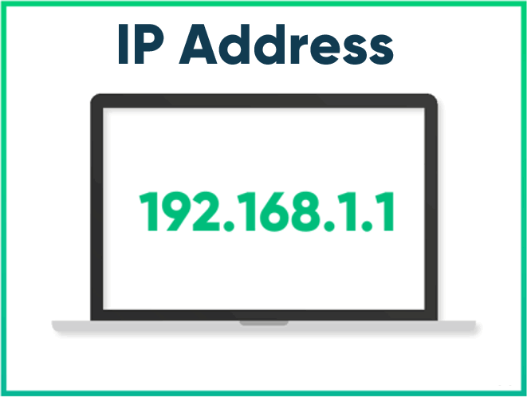
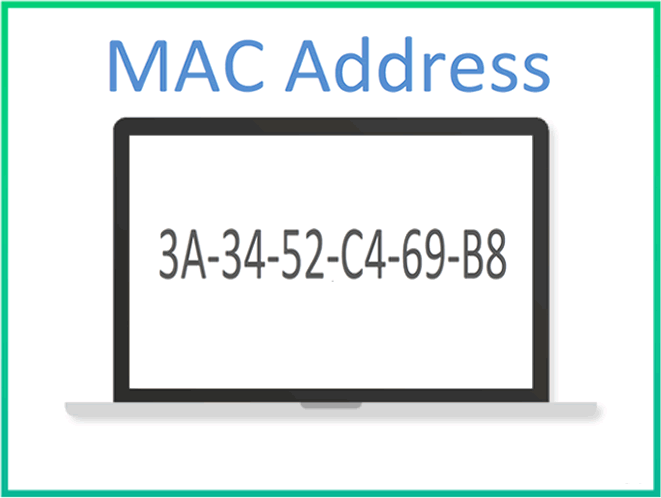

IP地址和Mac地址的区别
每一个连接到因特网（Internet）的计算机，包括电脑、手机、iPad 等，它们都有两个地址，分别是 IP 地址和 MAC 地址。
IP 和 MAC 都是地址，都用来标识连接到网络中的计算机，看起来是两种类似的技术，这让读者感到非常困惑，搞不清它们之间的区别，更不理解“为什么一台计算机需要两个地址”。
关于这个问题，网络上也有各种各样的解释，但是都不太清楚，所以我决定自己写一篇文章，简明地谈一下 IP 地址和 Mac 地址的区别，以及它们在网络通信中扮演的不同角色。
每一台计算机使用的 IP 地址，是由 ISP（指提供 Internet 服务的公司，比如电信、网通、移动等）负责分配的。通常情况下，计算机每次连接网络使用的 IP 地址都是不固定的，换句话说，ISP 会动态分配一个 IP 地址给它。
一台计算机可以拥有一个独立的 IP 地址，一个局域网也可以拥有一个独立的 IP 地址（对外就好像只有一台计算机）。对于目前广泛使用 IPv4 地址，它的资源是非常有限的，一台计算机一个 IP 地址是不现实的，往往一个局域网才拥有一个 IP 地址。
计算机之间进行通信，必须要知道对方的 IP 地址。实际上，计算机发出的数据包中已经附带了 IP 地址，把数据包发送给路由器以后，路由器会根据 IP 地址找到对方的地理位置，完成一次数据的传递。路由器有非常高效和智能的算法，很快就会找到目标计算机。
其实，真正能唯一标识设备的是 MAC 地址。MAC 地址是 Media Access Control Address 的缩写，直译为“媒体访问控制地址”，也称为局域网地址（LAN Address），以太网地址（Ethernet Address）或物理地址（Physical Address）。
计算机出厂时，MAC 地址已经被写死到网卡里面了（当然通过某些“奇巧淫技”也是可以修改的），每个网卡的 MAC 地址在全世界都是独一无二的。
局域网中的路由器/交换机会记录每台计算机的 MAC 地址。当一台计算机通过网络向另一台计算机发送数据时，数据包中除了会附带对方的 IP 地址，还会附带对方的 MAC 地址。当数据包达到局域网以后，路由器/交换机会根据数据包中的 MAC 地址找到对应的计算机，然后把数据包转交给它，这样就完成了数据的传递。
IP 和 MAC 都是地址，都用来标识连接到网络中的计算机，看起来是两种类似的技术，这让读者感到非常困惑，搞不清它们之间的区别，更不理解“为什么一台计算机需要两个地址”。
关于这个问题，网络上也有各种各样的解释，但是都不太清楚，所以我决定自己写一篇文章，简明地谈一下 IP 地址和 Mac 地址的区别，以及它们在网络通信中扮演的不同角色。
IP地址
IP 地址是 Internet Protocol Address 的缩写，译为“网际协议地址”。目前有大部分软件使用 IPv4 地址，但 IPv6 也正在被人们接受，尤其是在教育网中，已经大量使用。

每一台计算机使用的 IP 地址，是由 ISP（指提供 Internet 服务的公司，比如电信、网通、移动等）负责分配的。通常情况下，计算机每次连接网络使用的 IP 地址都是不固定的，换句话说，ISP 会动态分配一个 IP 地址给它。
一台计算机可以拥有一个独立的 IP 地址，一个局域网也可以拥有一个独立的 IP 地址（对外就好像只有一台计算机）。对于目前广泛使用 IPv4 地址，它的资源是非常有限的，一台计算机一个 IP 地址是不现实的，往往一个局域网才拥有一个 IP 地址。
计算机之间进行通信，必须要知道对方的 IP 地址。实际上，计算机发出的数据包中已经附带了 IP 地址，把数据包发送给路由器以后，路由器会根据 IP 地址找到对方的地理位置，完成一次数据的传递。路由器有非常高效和智能的算法，很快就会找到目标计算机。
MAC地址
通常情况下，一个局域网才能拥有一个独立的 IP，换句话说，IP 地址只能定位到一个局域网，无法定位到具体的某个设备。这可怎么办呀？这样也没法通信啊。其实，真正能唯一标识设备的是 MAC 地址。MAC 地址是 Media Access Control Address 的缩写，直译为“媒体访问控制地址”，也称为局域网地址（LAN Address），以太网地址（Ethernet Address）或物理地址（Physical Address）。

计算机出厂时，MAC 地址已经被写死到网卡里面了（当然通过某些“奇巧淫技”也是可以修改的），每个网卡的 MAC 地址在全世界都是独一无二的。
局域网中的路由器/交换机会记录每台计算机的 MAC 地址。当一台计算机通过网络向另一台计算机发送数据时，数据包中除了会附带对方的 IP 地址，还会附带对方的 MAC 地址。当数据包达到局域网以后，路由器/交换机会根据数据包中的 MAC 地址找到对应的计算机，然后把数据包转交给它，这样就完成了数据的传递。
总结
IP 地址和 MAC 地址虽然都是“地址”，但它们并不相同，在网络通信中发挥的作用也不一样。总的来说，IP 地址解决的是数据在外网（因特网、互联网）的传输问题，MAC 地址解决的是数据在内网（局域网）中的传输问题。
对于一台计算机来说，MAC 地址是必须有的，IP 地址可有可无。如果两台通信的计算机处于同一个局域网，那么理论上只凭借 MAC 地址就可以找到对方；如果两台计算机跨网传输数据，那么 IP 地址和 MAC 地址缺一不可。
关注公众号「站长严长生」，在手机上阅读所有教程，随时随地都能学习。内含一款搜索神器，免费下载全网书籍和视频。

微信扫码关注公众号